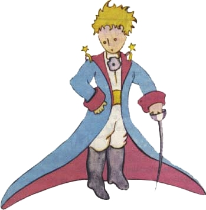
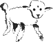
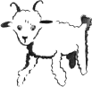
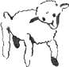
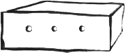

Antoine de Saint-Exupéry: Malý princ
II
Tak jsem žil sám a neměl jsem nikoho, s kým bych si mohl opravdu popovídat. Tu se mi jednou před šesti lety v poušti na Sahaře porouchal motor. Něco se v něm polámalo. A poněvadž jsem neměl s sebou mechanika a ni cestující, chtěl jsem se do té nesnadné opravy pustit sám. Byla to pro mne otázka života nebo smrti.
Měl jsem pitnou vodu sotva na týden.
První večer jsem tedy usnul v písku, na tisíc mil daleko od jakékoliv obydlené končiny. Byl jsem opuštěnější než trosečník na voru uprostřed oceánu. Dovedete si proto představit, jaké bylo mé překvapení, když mě na úsvitě probudil zvláštní hlásek:
„Prosím pěkně ... nakresli mi beránka...“
„Cože?“
„Nakresli mi beránka...“
Vyskočil jsem, jako by do mne hrom uhodil. Dobře jsem si protřel oči. Pozorně jsem se podíval a spatřil jsem prazvláštního človíčka, který si mě vážně prohlížel.

Toto je jeho nejlepší portrét, jaký se mi podařilo později nakreslit.
Má kresba ovšem není zdaleka tak půvabná jako model. Ale za to já nemohu. Dospělí mě odradili od malířské kariéry, když mi bylo šest let, a proto jsem se nenaučil kreslit nic jiného než zavřené a otevřené hroznýše. Udiveně jsem se díval na ten zjev. Považte jen, že jsem byl na tisíc mil od jakéhokoliv obydleného kraje. A můj človíček nevypadal, jako by zabloudil ani jako by byl na smrt unavený nebo vyhladovělý, polomrtvý žízní nebo na smrt vylekán. Vůbec nevypadal jako dítě ztracené v poušti, na tisíc mil daleko od nějakého obydleného kraje. Když jsem konečně byl schopen promluvit, řekl jsem mu:
„Ale ... co tu děláš?“
A tu mi docela tiše, jako něco nesmírně vážného, opakoval:
„Prosím pěkně ... nakresli mi beránka...“
Když stojíme před příliš velkou záhadou, neodvážíme se neuposlechnout. Ačkoli se mi to zdálo zde – na tisíce mil ode všech obydlených míst a v nebezpečí smrti nesmyslné, vytáhl jsem z kapsy list papíru plnící pero. Ale tu jsem si vzpomněl, že jsem studoval především zeměpis, dějepis, počty a mluvnici, a řekl jsem človíčkovi (trochu mrzutě), že neumím kreslit.
Odpověděl mi:
„To nevadí. Nakresli mi beránka.“
Poněvadž jsem nikdy nekreslil beránka, nakreslil jsem mu jednu z těch dvou kreseb, které jsem uměl. Obrázek zavřeného hroznýše. A užasl jsem, když jsem slyšel, jak mi ten človíček povídá:
„Ale ne, já nechci slona v hroznýši. Hroznýš je moc nebezpečný a slon zabere hodně místa. U mne doma je všechno malinké. Potřebuji beránka. Nakresli mi beránka.“
Tak jsem tedy kreslil.

Díval se pozorně a řekl:
„Ne! Tenhle je už moc nemocný. Udělej mi jiného.“
Nakreslil jsem tento obrázek:

Můj přítel se mile, shovívavě usmál:
„Ale podívej se ... to není beránek, to je beran. Má rohy...“
Tak jsem kresbu znovu předělal.

On ji však zase odmítl jako ty předcházející:
„Ten je moc starý. Já chci takového, aby dlouho žil.“
A tu, protože jsem ztratil trpělivost a protože jsem spěchal, abych se co nejdřív pustil do rozebírání motoru, načmáral jsem tuhle kresbu:

A prohlásil jsem:
„To je bedýnka. Beránek, kterého chceš, je uvnitř.“
Ale byl jsem velice překvapen, když se obličej malého soudce rozzářil.
„Právě tak jsem to chtěl. Myslíš, že ten beránek bude potřebovat hodně trávy?“
„Proč?“
„Protože u mne doma je všechno malinké...“
„Jistě to postačí. Dal jsem ti docela malého beránka.“
Sklonil se nad kresbu.
„No, není tak moc malý ... Jé, podívej se, on usnul...“
A tak jsem se seznámil s malým princem.
Saint-Exupéry, Antoine de: Malý princ, přel. Z.Stavinohová, Albatros, Praha 1972
|